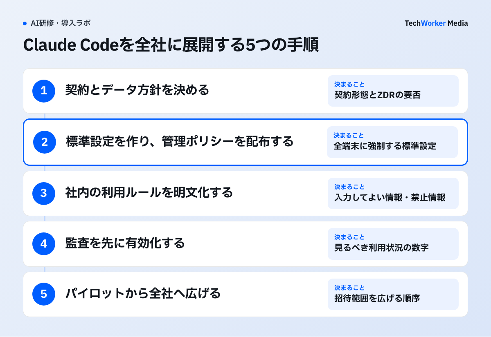
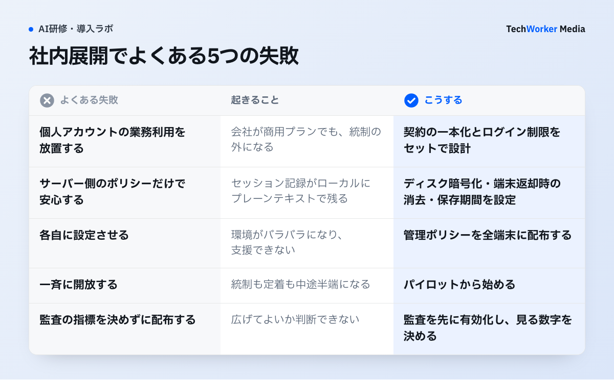
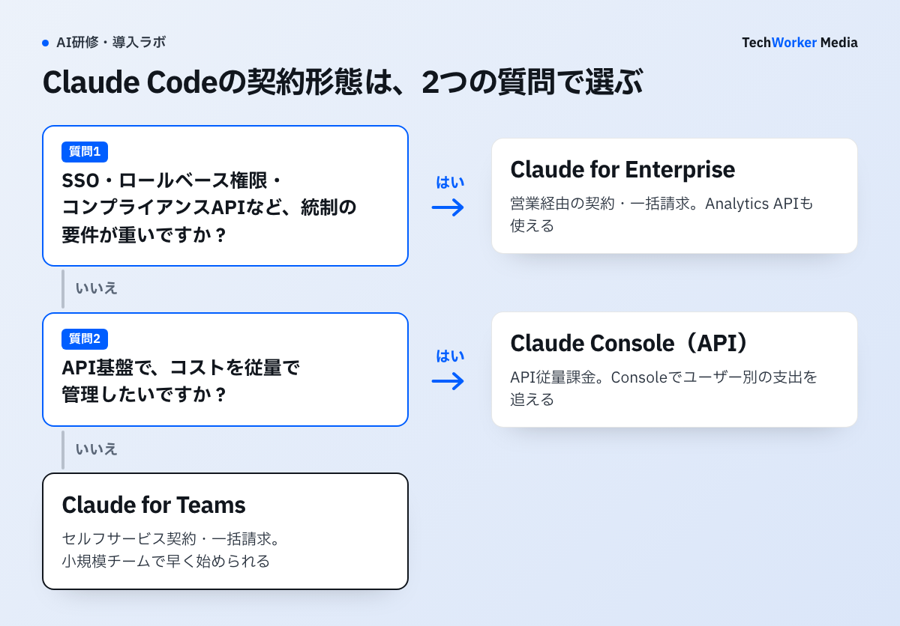

Claude Codeの社内展開で、情シスは何を押さえるべきですか？
契約形態・データの取扱い・設定配布・利用ルール・監査・展開順序の6つを、この順に決めます。
Claude Codeは、ターミナルやIDEから使うエージェント型のコーディングツールです。リポジトリのファイルを読み、編集し、コマンドを実行するところまで踏み込みます。
そのため、入力してよい情報のルールを決めるだけでは足りません。展開前に決める論点は、次の6つです。
- アカウント・契約：個人プランの混在を許すか、会社契約に統一するか。
- データの取扱い：学習利用の有無、保持期間、端末のローカル保存。
- 権限・設定の配布：どこまで自動実行を許すか、全端末に同じポリシーを強制できるか。
- 利用ルール：人が守る規程を、どう明文化するか。
- 監査・モニタリング：誰が、どれだけ、いくら使ったか。
- 展開の順序：一斉に開放するか、段階的に進めるか。
商用プラン（Team・Enterprise・API）では、入力したコードやプロンプトは既定でモデル学習に使われません。サーバー側の保持は標準30日です。個人プランの混在、いわゆる野良利用を防ぐことが、第一歩になります。
本記事の機能名と仕様は、Anthropic公式ドキュメント（code.claude.com/docs）で確認できた内容だけです（2026年8月時点）。仕様は更新されるため、展開時は最新の公式ドキュメントを確認してください。
TechWorkerは、Claude Codeの利用状況をどう見ていますか？
1回の応答ごとに推定額を画面に出し、前日の利用額を毎朝社内のSlackに届けています。
TechWorkerでは、代表の古野が毎日Claude Codeを使っています。用途は、自社サービスの開発、メディアの改修、営業資料の作成、毎朝の自動の集計です。
契約は、個人向けプランのMax 20x（月200ドル）です。使用量の上限を超えた分を従量で払う設定（extra usage）も有効にしています。
利用量は、日によって大きく変わります。代表の端末の利用記録を集計ツール（ccusage）でAPI料金に換算すると、次のとおりでした。
- 2026年9月14日〜30日の17日間で、約3,000ドル分です。
- 1日平均では、約180ドル分です。
- 少ない日は約4ドル分、多い日は約850ドル分でした。200倍以上の開きです。
換算額は、実際の請求額とは異なります。定額の範囲内の利用には、追加の支払いは発生しません。
費用の見え方は、次のように整えています。1回の応答ごとに、その回と累計の推定額を画面の下に表示します。前日の利用額は、毎朝社内のSlackに届きます。
社内展開でも、利用状況を数字で追える状態が必要です。公式の監査手段は、手順4で整理します。
全社展開は、どんな手順で進めますか？
契約とデータ方針、設定配布、利用ルール、監査、段階展開の5つを、この順で進めます。

手順1 契約とデータ方針を決める
最初の分岐は契約形態です。個人向けプラン（Free・Pro・Max）は消費者向け規約で提供されます。ユーザー自身の設定次第で、データが学習に使われる場合があります。
業務コードを扱う以上、商用条項が適用され、管理機能を持つ会社契約に統一するのが出発点です。選択肢はClaude for Teams、Claude for Enterprise、Claude Console（API課金）です。比較は、下の表にまとめました。
既存のクラウド契約を活かす経路もあります。Amazon Bedrock、Google Cloud、Microsoft Foundry経由です。
データの取扱いは、公式ドキュメントが商用プラン向けに次のとおり明記しています。
- モデル学習：組織が明示的にオプトインしない限り、コードやプロンプトを学習に使いません。
- サーバー側の保持：標準30日です。Zero Data Retention（ZDR）は、Enterprise向けに適格性を確認したうえで、組織単位で有効化します。標準のEnterpriseには、自動では含まれません。
- 端末のローカル保存：セッション記録が~/.claude/projects/に、既定で30日保存されます。保存期間は設定（cleanupPeriodDays）で調整できます。
- フィードバック送信：/feedbackで送った会話履歴は、5年間保持されます。環境変数で無効化できます。
- 運用テレメトリ：コード・プロンプト・ファイルパスは含まれません。環境変数でオプトアウトできます。
ここで、ZDRの要否と機密リポジトリの扱いを、法務・セキュリティと合意します。
手順2 標準設定を作り、管理ポリシーを配布する
Claude Codeの設定は、階層構造です。優先順位の高い順に、次の5層があります。
- 管理ポリシー：managed-settings.jsonです。端末全体に適用され、上書きできません。
- コマンドライン引数：そのセッションだけの、一時的な上書きです。
- ローカル設定：.claude/settings.local.jsonです。本人と該当リポジトリに限り、Git管理外です。
- プロジェクト設定：.claude/settings.jsonです。リポジトリの全員にGitで共有します。
- ユーザー設定：~/.claude/settings.jsonです。本人の全プロジェクトに適用されます。
統制の要は、最上位のmanaged-settings.jsonです。MDMやソフトウェア配布の仕組みで全端末に配置すれば、それが全社標準になります。配置先は、macOSが/Library/Application Support/ClaudeCode/です。Linux・WSLは/etc/claude-code/です。
書く内容の中心は、permissions（許可ルール）です。allow（許可）・deny（拒否）・ask（都度確認）を、ツールやコマンド単位で指定できます。たとえば「Read(./.env)」で、認証情報ファイルの読み取りを禁止できます。「Bash(curl *)」で、外部への送信コマンドを禁止できます。
Claude Codeは既定で読み取り専用です。ファイル編集やコマンド実行には、明示的な承認が求められます。
人が確認する工程の決め方は、AIに任せる業務の決め方（業務図ラボ）で扱っています。
野良利用への対策として、forceLoginMethodとforceLoginOrgUUIDを配布します。自社組織以外のアカウントでのログインを制限できます。
チームごとの開発ルールは、リポジトリの.claude/settings.jsonにコミットして共有します。会社が守る線と、チームが速く動くための線を、別の層に書けます。
手順3 社内の利用ルールを明文化する
技術的な統制と対になるのが、人が守る利用ルールです。次を叩き台に、自社の情報区分、開発規程、既存のAI利用ポリシーへ接続します。以下は雛形（例）です。そのまま規程として使わず、自社の環境に合わせて調整してください。
- 対象アカウント：会社が発行したTeam・Enterprise・Consoleのアカウントだけを使います。個人プランで業務コードや業務情報を入力することを禁止します。
- 入力してよい情報：自社リポジトリのコードと社内ドキュメントのうち、機密区分○以下です。顧客から預かったコードやデータは、事前承認制にします。
- 入力禁止情報：APIキー・パスワード・秘密鍵などの認証情報、顧客・従業員の個人情報、未公表の経営情報です。
- 権限設定：管理ポリシー設定を削除・回避しません。deny設定の変更は、情シスの承認制にします。
- 実行の承認：ファイル削除や外部送信を伴う操作は、内容を確認してから承認します。自動承認モードは、許可されたリポジトリに限ります。
- 成果物の扱い：AIが生成したコードは、人がレビューしてからマージします。ライセンスと脆弱性の確認は、既存の開発プロセスに従います。
- インシデント報告：機密情報の誤入力や不審な挙動は、窓口へ即時報告します。
ルールは禁止の羅列にせず、ここまでは使ってよいという許可の宣言として書きます。範囲が明確なほど、現場の利用は速くなり、統制も効きます。
手順4 監査を先に有効化する
公式に用意された監査手段は、2層あります。
1層目は、OpenTelemetryによるメトリクス出力です。環境変数CLAUDE_CODE_ENABLE_TELEMETRYを有効にします。セッション数、トークン使用量、コスト（USD）、編集されたコード行数、コミット数などを、自社の監視基盤へ送れます。送信先は、DatadogやGrafanaなど、OpenTelemetry対応の基盤です。
この設定をmanaged-settings.jsonのenvで固定すれば、出力を組織として強制できます。プロンプトや応答の本文、ツールの入出力は、既定で記録されません。含めるには、明示的なオプトインが必要です。
2層目は、管理者向けの分析ダッシュボードです。Team・Enterpriseでは、claude.ai上のダッシュボードを管理者が閲覧できます。閲覧できるのは、AdminとOwnerのロールです。
- 受け入れられたコード行数と、提案の受け入れ率。
- 日次アクティブユーザー数と、セッション数。
- 上位利用者のリーダーボードと、CSVエクスポート。
GitHub連携を有効にすると、Claude Codeが関与したマージ済みPRを識別できます（公開ベータ）。Console（API）では、Console側でユーザー別の支出を追えます。
配布したポリシーが書き換えられていないかは、ConfigChangeフックで確認できます。セッション中の設定変更を、監視・ブロックする機能です。
手順5 パイロットから全社へ広げる
一斉開放は、統制も定着も中途半端になります。次の順で広げます。
- 開発1〜2チームと情シスで、パイロットを始めます。permissionsのdeny・allowの標準セットと、プロジェクト設定の書き方を、実地で固めます。
- 固めた標準をmanaged-settings.jsonに落とし、MDMなどで対象端末へ配布します。ログイン制限もここで適用します。
- 監査の出力先とダッシュボードの閲覧体制を整えてから、招待範囲を広げます。
- 利用ルールの周知と、操作研修を対にして、全社へ広げます。
エンジニア以外への広げ方は、非エンジニアのClaude Code活用が参考になります。トークン消費とコストの設計は、Claude Codeの料金・コスト管理で扱っています。
社内展開がうまくいかない例には、どんなものがありますか？
個人アカウントの混在、端末側の見落とし、設定の個別運用、一斉開放、監査なしの拡大が代表例です。

- 個人アカウントの業務利用を放置する。会社が商用プランでも、社員が個人アカウントで業務コードを入力していれば、統制の外です。契約の一本化と、ログイン制限をセットで設計します。
- サーバー側のポリシーだけで安心する。セッション記録は、ローカルにプレーンテキストで保存されます。ディスク暗号化、退職・端末返却時のデータ消去、保存期間の設定は、自社のエンドポイント管理の仕事です。
- 各自に設定させる。環境がバラバラになり、支援できなくなります。
- 一斉に開放する。統制も定着も中途半端になります。パイロットから始めます。
- 監査の指標を決めずに配布する。見るべき数字がなければ、広げてよいかを判断できません。
契約形態ごとの管理機能は、どう違いますか？
小規模はTeams、統制要件が重い組織はEnterprise、従量で管理したいならConsoleが向きます。

| 観点 | Claude for Teams | Claude for Enterprise | Claude Console（API） |
|---|---|---|---|
| 契約・請求 | セルフサービス契約・一括請求 | 営業経由の契約・一括請求 | API従量課金 |
| 管理機能 | 管理ダッシュボード・メンバー管理 | SSO・ドメインキャプチャ・ロールベース権限・コンプライアンスAPI・管理ポリシー設定 | メンバー招待・ロール割当（Claude Code用APIキーのみ発行できる「Claude Code」ロールあり） |
| 利用分析 | claude.ai上の分析ダッシュボード | 同左＋Analytics API（Enterpriseのみ） | Consoleダッシュボード（利用状況・支出） |
| 向く組織 | 小規模チームで早く始めたい | セキュリティ・コンプライアンス要件が重い | API基盤でコストを従量管理したい |
出典：Anthropic公式ドキュメント（2026年8月時点）。
よくある質問
商用プラン（Team・Enterprise・APIなど）では、組織がオプトインしない限り、コードやプロンプトを学習に使わないとAnthropicが明記しています。個人向けプランには学習利用を許可する設定があるため、業務利用は会社契約に統一します。
できます。端末に配布するmanaged-settings.jsonは、優先順位が最上位です。ユーザー側の設定では上書きできません。MDMなどで配布します。
取得できます。OpenTelemetry形式で、セッション数・トークン使用量・コストなどを自社の監視基盤へ出力できます。Team・Enterpriseには、管理者向けの分析ダッシュボードもあります。メトリクスにコードやプロンプトの本文は含まれません。
管理ポリシー設定のforceLoginMethodとforceLoginOrgUUIDを使います。自社組織以外でのログインを制限できます。あわせて、会社契約アカウントの発行、利用ルールの明文化、研修による周知を進めると、実効性が上がります。
次の一歩は、何から始めればよいですか？
契約形態とデータ方針を決め、下のチェックリストを埋めながらパイロットを始めます。
展開前に、次のチェックリスト（雛形）を埋めてください。
- □ 契約形態を決めた（Teams・Enterprise・Console・クラウド経由）
- □ 学習利用と保持期間のポリシーを確認し、社内に説明できる
- □ 個人アカウントでの業務利用を禁止し、ログイン制限を設定した
- □ permissionsのdeny・allow標準セットを定義した
- □ managed-settings.jsonの配布経路（MDMなど）を確認した
- □ 端末側のローカル保存（暗号化・退職時の消去）を運用に組み込んだ
- □ OpenTelemetry出力か、ダッシュボードの閲覧体制を整えた
- □ 利用ルールを文書化し、研修・周知の計画を立てた
展開の設計と教育を、外部の伴走で進めたい場合は、TechWorkerのClaude Code研修をご覧ください。情シス向けの設定設計と、現場向けのハンズオンを一体で提供しています。